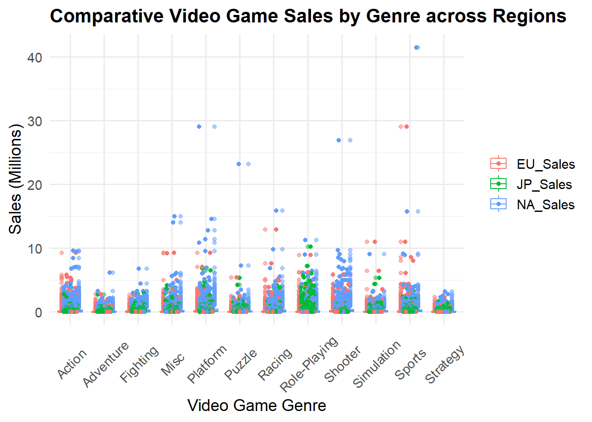
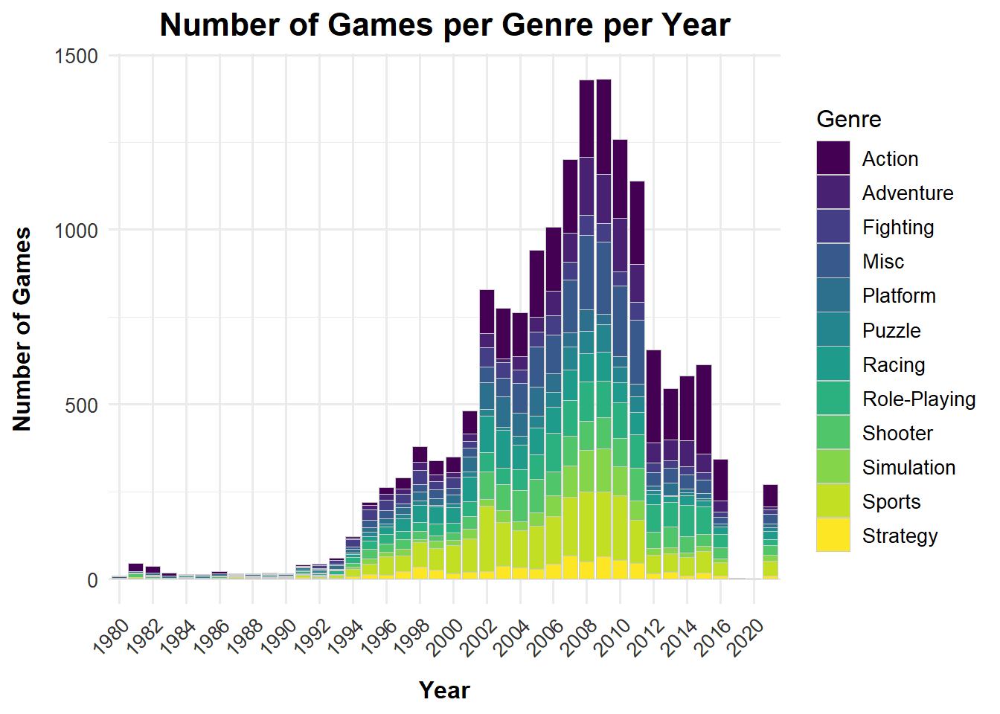
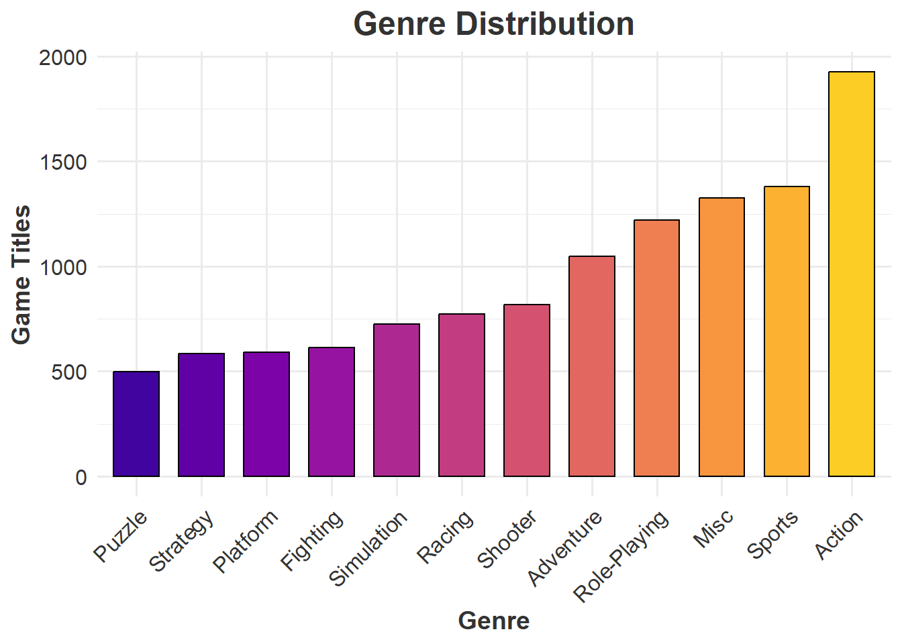

The data set contains a list of more that 100,000 copies of video games, from the time period of 1983 - 2012. It is a public data set that it can be obtain by the following website Kaggle - Video Game Sales
The data contains the rank of overall sales, game title, platform of the video game release, year of game release, genre of the game, publisher of game, and sales in the millions for US, Europe, Japan, rest of world wide and total global sales.
Flat Table - Video Games Sales
We have a Flat Table, the items are the rows, wherein each row is the different types of games that has been released from 1983 - 2012. Each item (games) is described by attributes, which are put in columns. Those attributes represent: index, rank, game title, platform, year, genre, publisher, US, Europe, Japan, Rest of the Word, Global (total of sales), and reviews. For each column of the different countries represent the total sales from each one in terms of millions in sales.
── Attaching core tidyverse packages ──────────────────────── tidyverse 2.0.0 ──
✔ dplyr 1.1.4 ✔ readr 2.1.5
✔ forcats 1.0.0 ✔ stringr 1.5.1
✔ ggplot2 3.4.4 ✔ tibble 3.2.1
✔ lubridate 1.9.3 ✔ tidyr 1.3.0
✔ purrr 1.0.2
── Conflicts ────────────────────────────────────────── tidyverse_conflicts() ──
✖ dplyr::filter() masks stats::filter()
✖ dplyr::lag() masks stats::lag()
ℹ Use the conflicted package (<http://conflicted.r-lib.org/>) to force all conflicts to become errors
ATTRIBUTE TYPES
Categorical: game title, platform, year, genre, publisher
Ordinal: Index, ranking
Quantitative: US (sales in millions), Europe (sales in millions), Japan (sales in millions), rest of the word (sales in millions), global (sales in millions), reviews in the sales
Expressiveness and Effectiveness
Code
library(tidyr)library(ggplot2)long_df <-pivot_longer(my_df, cols =c(NA_Sales, JP_Sales, EU_Sales), names_to ="Sales_Type", values_to ="Sales")ggplot(long_df, aes(x=Genre, y=Sales, color=Sales_Type)) +geom_boxplot(alpha=0.5) +geom_jitter(width=0.2, height=0, size=1.5) +theme_minimal(base_size =14) +ggtitle("Comparative Video Game Sales by Genre across Regions") +xlab("Video Game Genre") +ylab("Sales (Millions)") +theme(axis.text.x =element_text(angle =45, vjust =0.5),legend.title =element_blank(),plot.title =element_text(face ="bold", size =16),axis.title =element_text(size =14))

Figure 1: It’s a Jitter plot that represents the individual data points for video game sales (in millions) by their Genre from different Regions; these regions are NA (North America), EU (Europe), and JP (Japan). For marks I used Points to present my observations, and my channels are spatial position, shape and color.
Figure 2: For this second Jitter plot, I added more regions to compare the video game sales (in millions), so now we have the regions NA (North America), EU (Europe), JP (Japan), Other (other countries), and Global. The marks is still the same as the previous plot, but my channels I distorded. I changed the shape for each of the individual regions and its color. These makes it more distorted to understand the data.
`summarise()` has grouped output by 'Platform'. You can override using the
`.groups` argument.
Code
suppressMessages({title_platform<-my_df%>%select(Platform,Name)%>%group_by(Platform,Name)%>%summarise(count=n_distinct(Name))%>%group_by(Platform) %>%summarise(TotalCount =sum(count))})library(ggplot2)title_platform$Platform <-reorder(title_platform$Platform, title_platform$TotalCount)library(ggplot2)library(ggplot2)ggplot(data = title_platform, aes(x = Platform, y = TotalCount, fill = Platform)) +geom_col(color ="black", width =0.7) +ggtitle("Comparative Distribution of Game Titles Across Platforms") +xlab("Platform") +ylab("Game Titles") +scale_fill_viridis_d() +theme_minimal() +theme(plot.title =element_text(face ="bold", size =16),axis.title =element_text(size =14),axis.text.x =element_text(angle =45, hjust =1),legend.position ="none" )
Figure 3: It’s a Bar plot that represents the distribution of game title counts across from different platforms. For marks, I used “lines” to present my observations, and my channels are spatial position and color. The game title counts are ordered from lowest to highest according to their platform. It helps us to perceive how many games there are for each platform. Looking at the color range it’s from dark blue to bright yellow, meaning that with a brighter color, we have more game titles for that specific platform.
Figure 4: This second Bar plot is the same representation for the distribution of game title counts across from different platforms. I used the same marks and channels from the previous figure. The difference from the previous figure is that there’s no order between game title counts regarding to platform. The color scheme has no meaning that helps as a guide to perceive the highest and lowest count, which just makes it difficult to perceive at first glance.
Seperability
Code
title_year_games <- my_df %>%select(Year, Genre) %>%count(Year, Genre)library(ggplot2)library(viridis) # Load the viridis package for its color palettes
Loading required package: viridisLite
Code
# Enhanced ggplot with the viridis color paletteggplot(title_year_games, aes(x = Year, y = n, fill = Genre)) +geom_bar(stat ="identity", position ="stack", color ="grey80", size =0.1) +# Adding subtle bordersscale_fill_viridis_d() +# Use the viridis discrete color palettetheme_minimal(base_size =12) +# Adjusting base font size for overall consistencytheme(axis.text.x =element_text(angle =45, hjust =1, size =10, color ="grey20"), # Enhancing x-axis labelsaxis.text.y =element_text(size =10, color ="grey20"), # Enhancing y-axis labelsaxis.title.x =element_text(size =12, face ="bold", margin =margin(t =10)), # Styling x-axis titleaxis.title.y =element_text(size =12, face ="bold", margin =margin(r =10)), # Styling y-axis titleplot.title =element_text(size =16, face ="bold", hjust =0.5), # Centering and emphasizing the plot titlelegend.position ="right", # Adjusting legend position for better layoutlegend.title =element_text(size =12), # Styling the legend title for claritylegend.text =element_text(size =10) # Adjusting legend text size for readability ) +ggtitle("Number of Games per Genre per Year") +xlab("Year") +ylab("Number of Games") +scale_x_discrete(breaks =function(x) x[seq(1, length(x), by =2)])
Warning: Using `size` aesthetic for lines was deprecated in ggplot2 3.4.0.
ℹ Please use `linewidth` instead.

Figure 5: The stacked Bar Chart represents the number of games per genre per year. For marks, I used “lines” to present my observations, and my channels are spatial position and color. Looking at the color range it’s from dark blue to bright yellow, meaning that with a darker blue color, we have more number games per genre on per year.
Code
title_year_games <- my_df %>%select(Year, Genre) %>%count(Year, Genre)library(ggplot2)# Example using title_year_games data frameggplot(title_year_games, aes(x = Year, y = n, fill = Genre)) +geom_bar(stat ="identity", position ="stack") +theme_minimal() +theme(axis.text.x =element_text(angle =45, hjust =1, size =10), # Rotate and adjust size of x-axis labelsaxis.title.x =element_text(size =12),axis.title.y =element_text(size =12) ) +ggtitle("Number of Games per Genre per Year") +xlab("Year") +ylab("Number of Games")
Figure 6: The stacked Bar Chart represents the number of games per genre per year. For marks, I used “lines” to present my observations, and my channels are spatial position and color. Looking at this chart it’s difficult to distinguish the number of games per genre for some of the years.
`summarise()` has grouped output by 'Genre'. You can override using the
`.groups` argument.
Code
library(ggplot2)library(viridis)title_genre$Genre <-reorder(title_genre$Genre, title_genre$TotalCount)ggplot(data = title_genre, aes(x = Genre, y = TotalCount, fill = Genre)) +geom_col(color ="black", width =0.7) +scale_fill_viridis_d(option ="plasma", begin =0.1, end =0.9) +# Applying a vibrant color palette with good contrastggtitle("Genre Distribution") +xlab("Genre") +ylab("Game Titles") +theme_minimal(base_size =12) +# Using a minimal theme with a base font size for better readabilitytheme(plot.title =element_text(hjust =0.5, size =18, face ="bold", color ="grey20"), # Centered and bold title with adjusted coloraxis.title =element_text(size =14, face ="bold", color ="grey20"), # Bold and slightly larger axis titles for clarityaxis.text.x =element_text(angle =45, hjust =1, size =12, color ="grey20", vjust =1), # Adjusted x-axis labels for better legibilityaxis.text.y =element_text(size =12, color ="grey20"), # Y-axis labels with adjusted size and colorlegend.position ="none"# Removing the legend since the fill color is directly linked to the x-axis labels )

Figure 7: The Bar Chart represents the number of game titles per genre. For marks, I used “lines” to present my observations, and my channels are spatial position and color. Looking at the color range it’s from dark purple to bright yellow, meaning that a dark blue color, is the least number of game titles per genre and bright yellow is for the highest number of game titles for that genre w. It is also in order from least number to highest number of game titles per genre.
Figure 8:This Bar Chart represents the number of game titles per genre. For marks, I used “lines” to present my observations, and my channels are spatial position and color. The color scheme and the order of the game titles per genre don’t help to perceive the lowest game titles, for example, the ones that have the same quantity of game titles in different genres, you have to search for them to be able to identify them. The color scheme doesn’t give that pop out to easily identify which game title has the lowest quantity per genre.
Source Code
---title: ASSIGNMENT 4subtitle: Marks And Channelauthor: Geraline Trossi-TorresDate: 2024-02-14categories: [Assignment, DataViz]image: Profile_2.jpgcode-fold: truecode-tools: truedescription: Lets Learn about Marks and Channels---## Video Games Sales 1980 - 2020The data set contains a list of more that 100,000 copies of video games, from the time period of 1983 - 2012. It is a public data set that it can be obtain by the following website [Kaggle - Video Game Sales](https://www.kaggle.com/datasets/gregorut/videogamesales?resource=download)The data contains the rank of overall sales, game title, platform of the video game release, year of game release, genre of the game, publisher of game, and sales in the millions for US, Europe, Japan, rest of world wide and total global sales. ### Flat Table - Video Games SalesWe have a **Flat Table**, the **items** are the rows, wherein each row is the different types of games that has been released from 1983 - 2012. Each item (games) is described by attributes, which are put in columns. Those **attributes** represent: index, rank, game title, platform, year, genre, publisher, US, Europe, Japan, Rest of the Word, Global (total of sales), and reviews. For each column of the different countries represent the total sales from each one in terms of millions in sales.```{r}library(readxl)my_df <-read_excel("VIdeo_Game_sales.xlsx")knitr::kable(head(my_df,10))library(tidyverse)```### ATTRIBUTE TYPES* **Categorical:** game title, platform, year, genre, publisher* **Ordinal:** Index, ranking* **Quantitative:** US (sales in millions), Europe (sales in millions), Japan (sales in millions), rest of the word (sales in millions), global (sales in millions), reviews in the sales## Expressiveness and Effectiveness```{r}library(tidyr)library(ggplot2)long_df <-pivot_longer(my_df, cols =c(NA_Sales, JP_Sales, EU_Sales), names_to ="Sales_Type", values_to ="Sales")ggplot(long_df, aes(x=Genre, y=Sales, color=Sales_Type)) +geom_boxplot(alpha=0.5) +geom_jitter(width=0.2, height=0, size=1.5) +theme_minimal(base_size =14) +ggtitle("Comparative Video Game Sales by Genre across Regions") +xlab("Video Game Genre") +ylab("Sales (Millions)") +theme(axis.text.x =element_text(angle =45, vjust =0.5),legend.title =element_blank(),plot.title =element_text(face ="bold", size =16),axis.title =element_text(size =14))```**Figure 1:** It's a Jitter plot that represents the individual data points for video game sales (in millions) by their Genre from different Regions; these regions are NA (North America), EU (Europe), and JP (Japan). For marks I used Points to present my observations, and my channels are spatial position, shape and color.```{r}long_df <-pivot_longer(my_df, cols =c(NA_Sales, JP_Sales, EU_Sales, Other_Sales, Global_Sales), names_to ="Sales_Type", values_to ="Sales")ggplot(long_df, aes(x=Genre, y=Sales, color=Sales_Type, shape=Sales_Type)) +geom_boxplot(alpha=0.5) +geom_jitter(width=0.2, height=0, size=2.5) +theme_minimal(base_size =14) +ggtitle("Comparative Video Game Sales by Genre across Regions") +xlab("Video Game Genre") +ylab("Sales (Millions)") +theme(axis.text.x =element_text(angle =45, vjust =0.5),legend.title =element_blank(),plot.title =element_text(face ="bold", size =16),axis.title =element_text(size =14)) +scale_color_brewer(palette ="Set3") +guides(shape =guide_legend(override.aes =list(size =6)))```**Figure 2:** For this second Jitter plot, I added more regions to compare the video game sales (in millions), so now we have the regions NA (North America), EU (Europe), JP (Japan), Other (other countries), and Global. The marks is still the same as the previous plot, but my channels I distorded. I changed the shape for each of the individual regions and its color. These makes it more distorted to understand the data.## Discriminability```{r}title_platform<-my_df%>%select(Platform,Name)%>%group_by(Platform, Name)%>%summarise(count=n_distinct(Name))%>%group_by(Platform) %>%summarise(TotalCount =sum(count))suppressMessages({title_platform<-my_df%>%select(Platform,Name)%>%group_by(Platform,Name)%>%summarise(count=n_distinct(Name))%>%group_by(Platform) %>%summarise(TotalCount =sum(count))})library(ggplot2)title_platform$Platform <-reorder(title_platform$Platform, title_platform$TotalCount)library(ggplot2)library(ggplot2)ggplot(data = title_platform, aes(x = Platform, y = TotalCount, fill = Platform)) +geom_col(color ="black", width =0.7) +ggtitle("Comparative Distribution of Game Titles Across Platforms") +xlab("Platform") +ylab("Game Titles") +scale_fill_viridis_d() +theme_minimal() +theme(plot.title =element_text(face ="bold", size =16),axis.title =element_text(size =14),axis.text.x =element_text(angle =45, hjust =1),legend.position ="none" )```**Figure 3:** It's a Bar plot that represents the distribution of game title counts across from different platforms. For marks, I used "lines" to present my observations, and my channels are spatial position and color. The game title counts are ordered from lowest to highest according to their platform. It helps us to perceive how many games there are for each platform. Looking at the color range it's from dark blue to bright yellow, meaning that with a brighter color, we have more game titles for that specific platform. ```{r}ggplot(my_df, aes(x = Platform, fill = Platform)) +geom_bar(color ="black", width =0.7) +ggtitle("Platform Distribution") +xlab("Platform") +ylab("Game Titles") +theme_minimal() +theme(plot.title =element_text(hjust =0.5),axis.text.x =element_text(angle =45, hjust =1))```**Figure 4:** This second Bar plot is the same representation for the distribution of game title counts across from different platforms. I used the same marks and channels from the previous figure. The difference from the previous figure is that there's no order between game title counts regarding to platform. The color scheme has no meaning that helps as a guide to perceive the highest and lowest count, which just makes it difficult to perceive at first glance. ## Seperability```{r}title_year_games <- my_df %>%select(Year, Genre) %>%count(Year, Genre)library(ggplot2)library(viridis) # Load the viridis package for its color palettes# Enhanced ggplot with the viridis color paletteggplot(title_year_games, aes(x = Year, y = n, fill = Genre)) +geom_bar(stat ="identity", position ="stack", color ="grey80", size =0.1) +# Adding subtle bordersscale_fill_viridis_d() +# Use the viridis discrete color palettetheme_minimal(base_size =12) +# Adjusting base font size for overall consistencytheme(axis.text.x =element_text(angle =45, hjust =1, size =10, color ="grey20"), # Enhancing x-axis labelsaxis.text.y =element_text(size =10, color ="grey20"), # Enhancing y-axis labelsaxis.title.x =element_text(size =12, face ="bold", margin =margin(t =10)), # Styling x-axis titleaxis.title.y =element_text(size =12, face ="bold", margin =margin(r =10)), # Styling y-axis titleplot.title =element_text(size =16, face ="bold", hjust =0.5), # Centering and emphasizing the plot titlelegend.position ="right", # Adjusting legend position for better layoutlegend.title =element_text(size =12), # Styling the legend title for claritylegend.text =element_text(size =10) # Adjusting legend text size for readability ) +ggtitle("Number of Games per Genre per Year") +xlab("Year") +ylab("Number of Games") +scale_x_discrete(breaks =function(x) x[seq(1, length(x), by =2)])```**Figure 5:** The stacked Bar Chart represents the number of games per genre per year. For marks, I used "lines" to present my observations, and my channels are spatial position and color. Looking at the color range it's from dark blue to bright yellow, meaning that with a darker blue color, we have more number games per genre on per year. ```{r}title_year_games <- my_df %>%select(Year, Genre) %>%count(Year, Genre)library(ggplot2)# Example using title_year_games data frameggplot(title_year_games, aes(x = Year, y = n, fill = Genre)) +geom_bar(stat ="identity", position ="stack") +theme_minimal() +theme(axis.text.x =element_text(angle =45, hjust =1, size =10), # Rotate and adjust size of x-axis labelsaxis.title.x =element_text(size =12),axis.title.y =element_text(size =12) ) +ggtitle("Number of Games per Genre per Year") +xlab("Year") +ylab("Number of Games")```**Figure 6:** The stacked Bar Chart represents the number of games per genre per year. For marks, I used "lines" to present my observations, and my channels are spatial position and color. Looking at this chart it's difficult to distinguish the number of games per genre for some of the years. ## Popout```{r}title_genre<-my_df%>%select(Genre,Name)%>%group_by(Genre, Name)%>%summarise(count=n_distinct(Name))%>%group_by(Genre) %>%summarise(TotalCount =sum(count))library(ggplot2)library(viridis)title_genre$Genre <-reorder(title_genre$Genre, title_genre$TotalCount)ggplot(data = title_genre, aes(x = Genre, y = TotalCount, fill = Genre)) +geom_col(color ="black", width =0.7) +scale_fill_viridis_d(option ="plasma", begin =0.1, end =0.9) +# Applying a vibrant color palette with good contrastggtitle("Genre Distribution") +xlab("Genre") +ylab("Game Titles") +theme_minimal(base_size =12) +# Using a minimal theme with a base font size for better readabilitytheme(plot.title =element_text(hjust =0.5, size =18, face ="bold", color ="grey20"), # Centered and bold title with adjusted coloraxis.title =element_text(size =14, face ="bold", color ="grey20"), # Bold and slightly larger axis titles for clarityaxis.text.x =element_text(angle =45, hjust =1, size =12, color ="grey20", vjust =1), # Adjusted x-axis labels for better legibilityaxis.text.y =element_text(size =12, color ="grey20"), # Y-axis labels with adjusted size and colorlegend.position ="none"# Removing the legend since the fill color is directly linked to the x-axis labels )```**Figure 7:** The Bar Chart represents the number of game titles per genre. For marks, I used "lines" to present my observations, and my channels are spatial position and color. Looking at the color range it's from dark purple to bright yellow, meaning that a dark blue color, is the least number of game titles per genre and bright yellow is for the highest number of game titles for that genre w. It is also in order from least number to highest number of game titles per genre. ```{r}title_genre<-my_df%>%select(Genre,Name)%>%group_by(Genre, Name)%>%summarise(count=n_distinct(Name))%>%group_by(Genre) %>%summarise(TotalCount =sum(count))ggplot(data = title_genre, aes(x = Genre, y = TotalCount, fill = Genre)) +geom_col(color ="black", width =0.7) +ggtitle("Genre Distribution") +xlab("Genre") +ylab("Game Titles") +theme_minimal(base_size =12)```**Figure 8:**This Bar Chart represents the number of game titles per genre. For marks, I used "lines" to present my observations, and my channels are spatial position and color. The color scheme and the order of the game titles per genre don't help to perceive the lowest game titles, for example, the ones that have the same quantity of game titles in different genres, you have to search for them to be able to identify them. The color scheme doesn't give that pop out to easily identify which game title has the lowest quantity per genre.